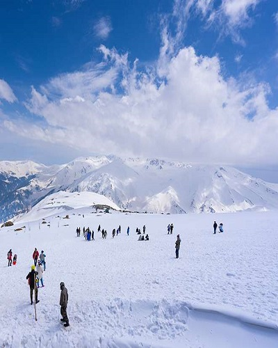
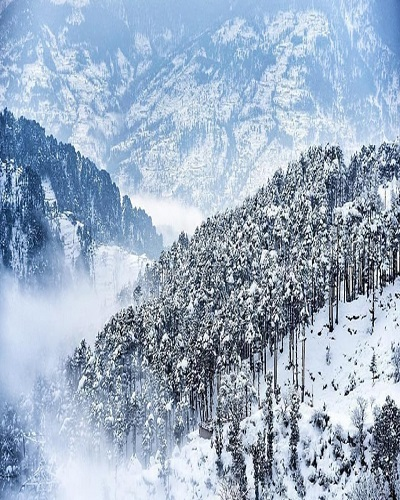
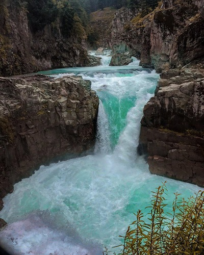
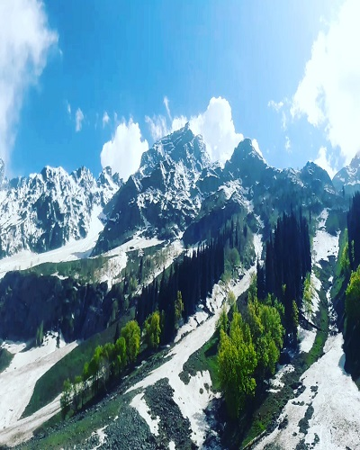
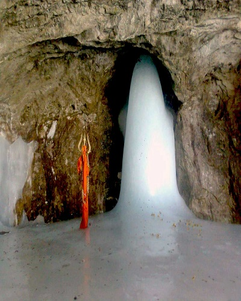

The best time to visit Srinagar is from April to October when the weather is not too cold and is perfect for sightseeing.Read More
Srinagar
Aru Valley
July to September is the best time to visit Aru Valley, since it's great for sightseeing at this time. To enjoy skiing however, plan a trip to Aru Valley during the winter.Read More
Aru Valley

Gulmarg
The best time to visit Gulmarg for Snowfall is just after peak winter – January and February.Read More
Gulmarg

Jammu
Jammu has a moderate climate and can be visited in most part of the year. Cooler months starting from September to April can be considered ideal for visiting.Read More
Jammu

Pulwama
Lying in the midst the Himalayan ranges, the weather remains pleasant throughout the year, but the best time to visit Pulwama is from April to October. Read More
Pulwama

Sonmarg
Sonmarg is a year-round destination, but April to June is the ideal time to visit. You're most likely to find an explosion of wild flowers carpeting the valley.Read More
Sonmarg

Amarnath
Usually, till the end of June, the Amarnath cave is open to the public. Hence, the best time to visit June till August can be considered as an option.Read More
Amarnath
Vaishno Devi Temple
The best time to visit Vaishno Devi is undoubtedly in the months of May, June and July.Read More